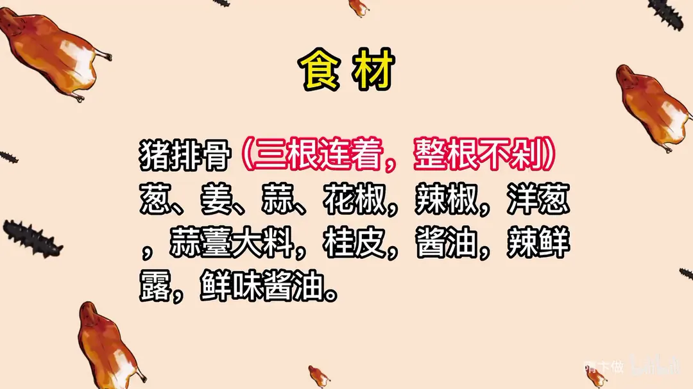
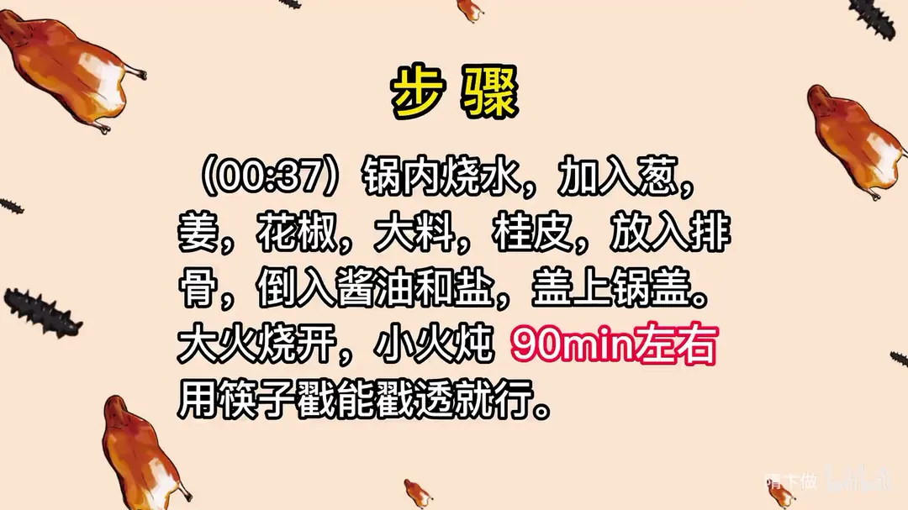
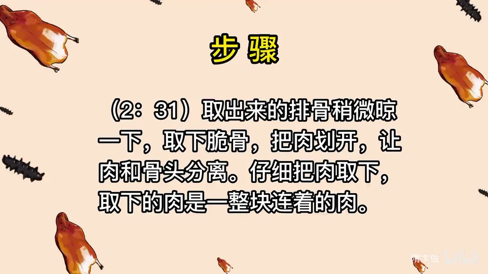
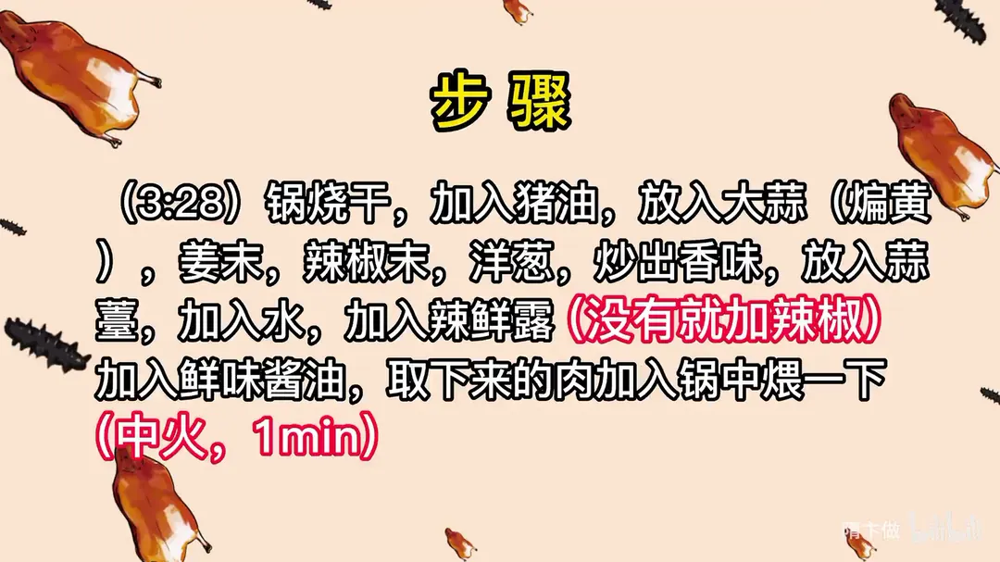
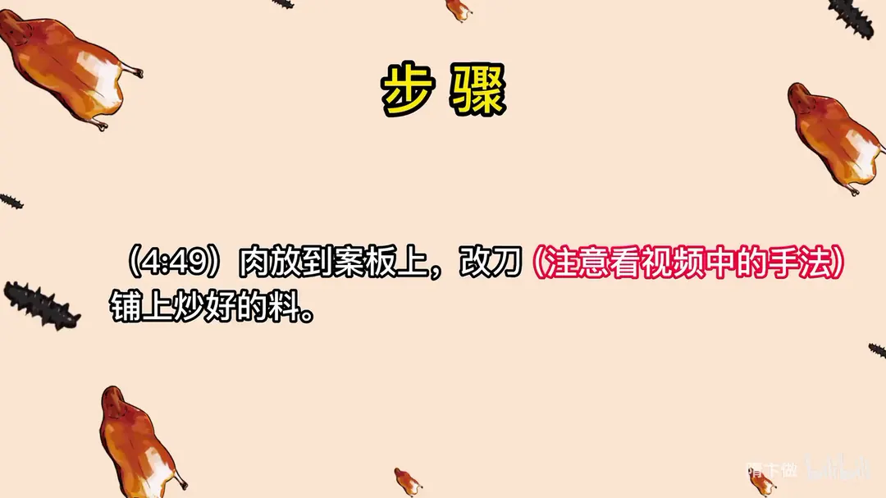

过桥排骨
隋卞一做。三根连着的整根排骨不剁，先卤九十分钟，晾凉后取下脆骨、把肉整块片下，再用猪油炒料、中火煨一分钟，改刀后铺上炒好的料。
原视频：https://www.bilibili.com/video/BV1vM411G7EX
食材
猪排骨、葱、姜 等 15 样
| 类别 | 用料 | 用量 |
|---|---|---|
| 主料 | 猪排骨（三根连着，整根不剁） | 适量 |
| 卤制 | 葱 | 适量 |
| 卤制 | 姜 | 适量 |
| 卤制 | 花椒 | 适量 |
| 卤制 | 大料 | 适量 |
| 卤制 | 桂皮 | 适量 |
| 卤制 | 酱油 | 适量 |
| 卤制 | 盐 | 适量 |
| 炒料 | 蒜 | 适量 |
| 炒料 | 辣椒 | 适量 |
| 炒料 | 洋葱 | 适量 |
| 炒料 | 蒜薹 | 适量 |
| 炒料 | 猪油 | 适量 |
| 调味 | 辣鲜露 | 适量 |
| 调味 | 鲜味酱油 | 适量 |
步骤
- 炖排骨：锅内烧水，加入葱、姜、花椒、大料、桂皮，放入排骨，倒入酱油和盐，盖上锅盖；大火烧开，小火炖 90min 左右，用筷子戳能戳透就行。
- 取肉：取出来的排骨稍微晾一下，取下脆骨，把肉划开、让肉和骨头分离，仔细把肉取下，取下的肉是一整块连着的肉。
- 炒料煨肉：锅烧干，加入猪油，放入大蒜煸黄，加姜末、辣椒末、洋葱炒出香味；放入蒜薹，加水，加辣鲜露（没有就加辣椒）、加鲜味酱油，把取下来的肉加入锅中煨一下，中火 1min。
- 改刀装盘：肉放到案板上改刀，注意看视频中的手法；铺上炒好的料。
讲解要点
难度：★★★☆☆（做法本身不难，难在排骨炖到能脱骨的火候和取肉的手法，取不好就散）
为什么这么做
- 买三根连着的整根排骨、不剁：排骨连着才有一整排骨架，取肉时能取下一整张不缺的肉片，装盘才有「过桥」的形。
- 生肉先泡、加点葱姜：提前泡出血水，腥味来源去了一大半，成菜肉味更干净。
- 桂皮一定要少放：桂皮香气霸道，放多了压住肉香，整锅都是药味。
- 加酱油同煮、不放味精，只放少量盐：酱油同煮给排骨上一层浅浅的枣红色，不至于白得难看；盐提前定底味，后面炒料只做补味。
- 大火烧开转小火炖九十分钟：小火保持微沸，肉纤维慢慢松弛而不被冲散，筷子一戳能透就到位。
- 晾一下再取肉：刚出锅的肉太烫太软，肉和骨头几乎黏在一起，稍凉后收缩，分离起来整块完整。
- 取下的肉是一整片、背面连着的：这正是整根排骨不剁的意义，肉片完整，装盘才能把料盖在金黄的排骨架上。
- 先炒料再煨肉：料炒香后加水，味道已经落在汤汁里，肉只在中火里煨一分钟，吸一层厚重味，不是把它煮烂。
- 用猪油、蒜要煸黄：猪油香气厚，蒜煸到发黄才出熟蒜的甜香，早下则生、晚下则苦。
容易翻车
- 炖得不够，肉跟骨头分不开、撕下来全是碎块；炖过头，肉又软得挂不住。
- 取肉下手太重，一整片肉被切碎，回不到骨架上。
- 煨肉时间一长，肉吸饱水变松散，入口就没有「肉里外有味」的爽感。
- 没有辣鲜露可以用辣椒替代，但辣鲜露本身带鲜味，只有辣椒的话鲜味会差一截。
原片尾卡





原片文案
AI 字幕校准稿
今天教你们一个硬菜，无论到任何场合，你端着这道菜都能镇住场子。官妈同款过桥排骨，我自己又稍微改进了一点，这个菜很简单。过桥排骨要准备猪排骨，你们去卖肉的那里怎么跟老板说呢？三根排骨连着、整根不动。
在外面买回来的肉，回家基本都要洗一下，不着急吃可以多泡一会儿，放点葱姜之类的，去去腥味也更干净。我们先把这排骨煮一下。锅里烧上咱们常喝的生水，加上葱姜、花椒、大料、桂皮——炖肉的时候桂皮一定要少放，这个调料特别容易压味。排骨直接放进去，泡在水里，加上点酱油，煮的时候顺便上点色，不要太白，那种浅红色就可以。里边再少放点盐，煮的时候就提前给它进个调味，味精之类的都不用放。让他尝尝味，然后盖盖，大火烧开，小火炖九十分钟左右，炖到筷子一戳能戳透就行。
取出来的排骨稍微晾一下，先把这块脆骨取下来，再把肉划开，让肉和骨头分离，这一步是为了方便把肉取下来。一定要注意轻一点，拿刀从这儿拉一下，只要把下面这块肉取下来就行。看一下啊，取下来是一整块肉，背后都是连着的。
接下来调料。锅烧空气，里边加上猪油，放入大蒜，一定要把蒜煸黄，加姜末、辣椒末、洋葱炒出香味，放入蒜薹，加水。来点辣鲜露——辣鲜露是一种调味品，既有鲜味又有辣味，如果没有，就多点辣椒；再少来一点鲜味酱油，有点色就行。尝一下味，差不多就把取出来的肉放进去稍微烧一下，这样更加的入味，吃着味道更厚重、更有回味。因为我们排骨在煮的时候已经进了点底味，所以只用中火稍微烧一下，有一分钟就行了。
这就可以把弄好的肉放在案板上改刀，在贴骨头的地方看下面，注意看手法。把改好刀的排骨放回原处，恢复到原样，把炒好的料浇在上面。这道菜相比它的外形来说，其实做起来不难，最难的是内部去骨。肉里外一个味，吃着也方便，这块肉上面有肉有筋，所以吃起来特别爽。